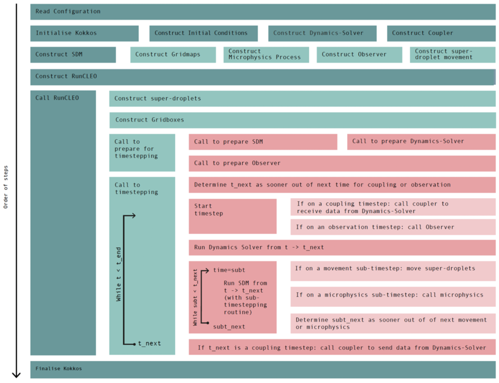

Understanding and Adapting main.cpp¶
Every Cleo executable is, in essence, one main.cpp file. Optionally this file is split into a
thin main.cpp plus a main_impl.hpp holding the “configuration” functions, as
roughpaper/src/ does.
This page walks through roughpaper/src/main.cpp and main_impl.hpp block by block to
show how each component of Cleo fits together and they could be configured. Treat
roughpaper/src/ as a template/scratchpad: it is supposed to be a source of inspiration or
experimentation, rather than “the” canonical example. You can build the roughpaper example with
the flag -DCLEO_NO_ROUGHPAPER=false (the default) but this roughpaper is really intended
just to illustrate the potential choices you could make when you create a Cleo simulation.
For examples where a particular model configuration is chosen, as you would do for your own setup,
look in CLEO/examples/ (see Tutorial: Creating a New Cleo Experiment From Scratch).
The Overall Structure of a Cleo Executable¶
At the top level, every Cleo executable follows the same 10 steps seen in its main(...) program:
Parse the
YAMLconfiguration file from the command line agruments to build aConfig.Initialise a
Communicator(for MPI and optionally YAC).initialise
Kokkos.Construct one
SDMMethodsobject: everything needed for the SDM part of the model (an instantiatedGridboxMaps,MicrophysicalProcess,MoveSupersInDomain, andObserver).Construct the coupled dynamics (i.e. one object satisfying the
CoupledDynamicsconcept).Construct the coupler (i.e. one object satisfying the
CouplingCommsconcept, or, more exactly, on object satisfying theCouplingComms<YourGridboxMaps, YourCoupledDynamics>concept).Construct the initial conditions (one object satisfying the
InitialConditionsconcept).Construct a
RunCLEOobject from theSDMMethods, theCoupledDynamicsandCouplingCommsobjectsCall
RunCLEOwith the previously generatedInitialConditions; this runs the entire simulation.Finalise Kokkos and exit.
The Structure in Code (the main function)¶
The main function is the entry point of a Cleo executable. It is usually found in a main.cpp
file and it implements the 10 steps listed above.
main.cpp¶
In roughpaper/src/, main.cpp itself is deliberately short, it contains only the main(...)
function which does the 10 steps listed above. The details of how each of the 10 steps is implemented,
and the specific choices made for each step, are all kept separately in main_impl.hpp.
Usually the contents of main_impl.hpp would instead be found at the top of main.cpp,
as done in the CLEO/examples/. For clarity however, in roughpaper/src/ we seperate them.
Irrespective of where the specific implementaiton choices are written, the main(...) function
for Cleo should look as follows:
int main(int argc, char* argv[]) {
if (argc < 2) {
throw std::invalid_argument("configuration file(s) not specified");
}
Kokkos::Timer kokkostimer;
/* STEP (1) Read input parameters from configuration file(s) */
const std::filesystem::path config_filename(argv[1]);
const Config config(config_filename);
/* STEP (2) Initialize Communicator here */
init_communicator init_comm(argc, argv, config);
/* STEP (3) Initialise Kokkos parallel environment */
Kokkos::initialize(config.get_kokkos_initialization_settings());
{
Kokkos::print_configuration(std::cout);
const Timesteps tsteps(config.get_timesteps());
auto store = FSStore(config.get_zarrbasedir());
auto dataset = SimpleDataset(store);
/* STEP (4) CLEO Super-Droplet Model (excluding coupled dynamics solver) */
const SDMMethods sdm = create_sdm(config, tsteps, dataset, store);
/* STEP (5) Solver of dynamics coupled to CLEO SDM */
CoupledDynamics auto coupldyn =
create_coupldyn(config, sdm.gbxmaps, tsteps.get_couplstep(), tsteps.get_t_end());
/* STEP (6) Coupling between coupldyn and SDM */
const CouplingComms<CartesianMaps, FromFileDynamics> auto comms = FromFileComms{};
/* STEP (7) Initial conditions for CLEO run */
const InitialConditions auto initconds = create_initconds(config, sdm.gbxmaps);
/* STEP (8 and 9) Create and Run CLEO (SDM coupled to dynamics solver) */
const RunCLEO runcleo(sdm, coupldyn, comms);
runcleo(initconds, tsteps.get_t_end());
}
/* STEP (10) Finalize Kokkos and end program */
Kokkos::finalize();
const auto ttot = double{kokkostimer.seconds()};
std::cout << "CLEO Total Program Duration: " << ttot << "s\n";
return 0;
}
In case you are wondering, the extra { } block is because everything Kokkos-related must happen
between Kokkos::initialize and Kokkos::finalize — this is a Kokkos requirement, not a
Cleo-specific one.
Notice that every “ingredient” which is defined by a concept (coupldyn,
comms, initconds) is declared using its concept name with auto
(CoupledDynamics auto coupldyn = ...), never a concrete class name. This is what lets you swap
out template instantiations, e.g., FromFileDynamics for NullDynamics, by editing only the
functions returns in main_impl.hpp, and never having to touch main(...) itself. Similarly
the templated types that compose RunCLEO and SDMMethods are not explicitly written in
main(...) and are thus also easily interchangeable.
main_impl.hpp¶
main_impl.hpp holds the create_* functions that main(...) calls. Reading it
bottom-to-top roughly mirrors the order things are needed in main(...) (the file is ordered
bottom-up by dependency: small “ingredient” functions first and with the function that ties
them all together, create_sdm, defined last). The first 3 steps of main(...) are handled
directly by various constructors and initializers, so the first create_* function main(...)
actually calls is at step 4, create_sdm — even though it’s the last function defined in
the file. It looks as follows:
template <typename Dataset, typename Store>
inline auto create_sdm(const Config& config, const Timesteps& tsteps, Dataset& dataset, Store& store) {
const auto couplstep = (unsigned int)tsteps.get_couplstep();
const GridboxMaps auto gbxmaps = create_gbxmaps(config);
const MicrophysicalProcess auto microphys = create_microphysics(config, tsteps);
const MoveSupersInDomain movesupers = create_movement(config, tsteps, gbxmaps);
const Observer auto obs = create_observer(config, tsteps, dataset, store);
return SDMMethods(couplstep, gbxmaps, microphys, movesupers, obs);
}
So, to create a SDMMethods struct, we need to four ingredients: a GridboxMaps, a
MicrophysicalProcess, a MoveSupersInDomain struct, and an Observer.
Starting with the GridboxMaps, we call the create_gbxmaps function. In
main_impl.hpp it is defined as follows:
inline GridboxMaps auto create_gbxmaps(const Config& config) {
return create_cartesian_maps(config.get_ngbxs(), config.get_nspacedims(),
config.get_grid_filename());
}
Here we choose to create a cartesian domain geometry from the config’s ngbxs, number of
spatial dimensions, and the grid-boundaries binary file (see Tutorial: Creating a New Cleo Experiment From Scratch).
Next, we need to create the MicrophysicalProcess and so we call create_microphysics, which,
in this example looks as follows:
inline MicrophysicalProcess auto create_microphysics(const Config& config, const Timesteps& tsteps) {
const MicrophysicalProcess auto cond = config_condensation(config, tsteps);
const MicrophysicalProcess auto colls = config_collisions(config, tsteps);
return colls >> cond;
}
where config_condensation and config_collisions are also defined in main_impl.hpp:
inline MicrophysicalProcess auto config_condensation(const Config& config, const Timesteps& tsteps) {
const auto c = config.get_condensation();
return Condensation(tsteps.get_condstep(), &step2dimlesstime, c.do_alter_thermo, c.maxniters,
c.rtol, c.atol, c.MINSUBTSTEP, &realtime2dimless);
}
inline MicrophysicalProcess auto config_collisions(const Config& config, const Timesteps& tsteps) {
const PairProbability auto collprob = LongHydroProb();
const NFragments auto nfrags = ConstNFrags(config.get_breakup().constnfrags.nfrags);
const CoalBuReFlag auto coalbure_flag = TSCoalBuReFlag(RogersGKTerminalVelocity{});
return CoalBuRe(tsteps.get_collstep(), &step2realtime, collprob, nfrags, coalbure_flag);
}
In create_microphysics we see the microphysics monoid combination from
Combining Microphysics and Observers be used — here, condensation/evaporation is combined with
collisional coalescence/rebound/breakup (via CoalBuRe, using a collision-outcome flag
TSCoalBuReFlag and a number-of-fragments parameterisation ConstNFrags).
Having a look inside main_impl.hpp and you will see as commented-out code several alternative
definitions of config_collisions and alternative configurations within each one — this
is meant as inspiration for you to choose how to setup your own example. For example you may instead
choose to only model collision-coalescence with one of the various definitions of the
collision-coalscence probabilitiy which Cleo has implemented, e.g. using:
inline MicrophysicalProcess auto config_collisions(const Config& config, const Timesteps& tsteps)
{
// const PairProbability auto coalprob = GolovinProb();
// const PairProbability auto coalprob = LowListCoalProb(RogersGKTerminalVelocity{});
// const PairProbability auto coalprob = LongHydroProb(); // assumes coaleff = 1.0
const PairProbability auto coalprob =
LongHydroProb(config.get_coalescence().constcoaleff.coaleff);
const MicrophysicalProcess auto coal = CollCoal(tsteps.get_collstep(), &step2realtime,
coalprob);
return coal;
}
with any one of the different definitions of coalprob compiled.
Next, we need to create a MoveSupersInDomain struct from the create_movement function,
e.g. as follows:
inline Motion<CartesianMaps> auto create_motion(const unsigned int motionstep) {
const auto terminalv = RogersGKTerminalVelocity{};
return CartesianMotion(motionstep, &step2dimlesstime, terminalv);
}
inline BoundaryConditions<CartesianMaps> auto create_boundary_conditions(const Config& config) {
return NullBoundaryConditions{};
}
template <GridboxMaps GbxMaps>
inline auto create_movement(const Config& config, const Timesteps& tsteps, const GbxMaps& gbxmaps) {
const Motion<CartesianMaps> auto motion = create_motion(tsteps.get_motionstep());
const BoundaryConditions<CartesianMaps> auto boundary_conditions =
create_boundary_conditions(config);
return cartesian_movement(gbxmaps, motion, boundary_conditions);
}
Here we use the cartesian_movement to create the MoveSupersInDomain struct we need for
motion of super-droplets in a cartesian domain. For cartesian_movement we require some kind of
superdroplet motion and some boundary conditions (see Why It’s Structured This Way). For the
superdroplet motion we call create_motion which creates CartesianMotion using a
terminal-velocity formula (here, RogersGK but main_impl.hpp shows several alternatives
such as NullTerminalVelocity or SimmelTerminalVelocity). For the boundary conditions
we call our create_boundary_conditions function which creates NullBoundaryConditions in this
example. We could equally well however, have chosen different boundary conditions, e.g.
AddSupersToDomain (again, as shown in main_impl.hpp) to remove spare super-droplets and
create new ones at the top/bottom of the domain.
Finally, we need to creaet the Observer and for this we call create_observer. Depening on
the desired output of a simulation, there are a great many ways to design this function, see
Combining Microphysics and Observers and main_impl.hpp for more details. Then as last we are
able to understand the create_sdm function shown at the start:
template <typename Dataset, typename Store>
inline Observer auto create_observer(const Config& config, const Timesteps& tsteps,
Dataset& dataset, Store& store) {
// ... builds and combines ~9 observers, see roughpaper/src/main_impl.hpp
}
template <typename Dataset, typename Store>
inline auto create_sdm(const Config& config, const Timesteps& tsteps, Dataset& dataset, Store& store) {
const auto couplstep = (unsigned int)tsteps.get_couplstep();
const GridboxMaps auto gbxmaps = create_gbxmaps(config);
const MicrophysicalProcess auto microphys = create_microphysics(config, tsteps);
const MoveSupersInDomain movesupers = create_movement(config, tsteps, gbxmaps);
const Observer auto obs = create_observer(config, tsteps, dataset, store);
return SDMMethods(couplstep, gbxmaps, microphys, movesupers, obs);
}
In step 5 of main(…), we create the coupled dynamics through create_coupldyn,
for example, for reading data from a file, the function is as follows:
inline CoupledDynamics auto create_coupldyn(const Config& config, const CartesianMaps& gbxmaps,
const unsigned int couplstep, const unsigned int t_end) {
const auto h_ndims = gbxmaps.get_global_ndims_hostcopy();
const std::array<size_t, 3> ndims({h_ndims(0), h_ndims(1), h_ndims(2)});
const auto nsteps = (unsigned int)(std::ceil(t_end / couplstep) + 1);
return FromFileDynamics(config.get_fromfiledynamics(), couplstep, ndims, nsteps);
}
and is associated in step 6 of main(...) with comms = FromFileComms{}. See
Coupled Dynamics and the Cleo examples for alternative coupled dynamics and couplers. As
a concrete example (condensed from Coupled Dynamics’s worked example): switching
an example from reading dynamics from file to having no dynamics at all only requires changing
two things in main_impl.hpp/main.cpp, everything else is untouched:
// before: one-way coupled to binary files
inline CoupledDynamics auto create_coupldyn(const Config& config, const CartesianMaps& gbxmaps,
const unsigned int couplstep, const unsigned int t_end) {
const auto h_ndims = gbxmaps.get_global_ndims_hostcopy();
const std::array<size_t, 3> ndims({h_ndims(0), h_ndims(1), h_ndims(2)});
const auto nsteps = (unsigned int)(std::ceil(t_end / couplstep) + 1);
return FromFileDynamics(config.get_fromfiledynamics(), couplstep, ndims, nsteps);
}
// in main(...):
const CouplingComms<CartesianMaps, FromFileDynamics> auto comms = FromFileComms{};
// after: no coupled dynamics at all
inline CoupledDynamics auto create_coupldyn(const Config& config, const CartesianMaps& gbxmaps,
const unsigned int couplstep, const unsigned int t_end) {
return NullDynamics(couplstep);
}
// in main(...):
const CouplingComms<CartesianMaps, NullDynamics> auto comms = NullDynComms{};
You would also need to update your executable’s CMakeLists.txt to link coupldyn_null instead of
coupldyn_fromfile, and (if you no longer need it) remove the fromfiledynamics block from
your YAML configuration file (see Tutorial: Creating a New Cleo Experiment From Scratch).
Common pitfall
Forgetting to update the CMakeLists.txt link line after changing which coupldyn_*
header you #include produces a linker error (undefined reference), not a compiler error —
if you see undefined references to symbols that plainly exist in a header you’re including,
check which libraries your executable’s target_link_libraries lists. This also applies
when you change other model components not just coupldyn_*, e.g. if you change/add
observers to construct the combined Observer you want to use!
In step 7 of main(...), we construct the initial conditions through the create_initconds
function. For example, we can use the following function:
template <GridboxMaps GbxMaps>
inline InitialConditions auto create_initconds(const Config& config, const GbxMaps& gbxmaps) {
const auto initsupers = InitSupersFromBinary(config.get_initsupersfrombinary(), gbxmaps);
const auto initgbxs = InitGbxsNull(gbxmaps.get_local_ngridboxes_hostcopy());
return InitConds(initsupers, initgbxs);
}
which constructs the initial conditions for superdroplets by reading a binary file
(InitSupersFromBinary), and constructs “Null” initial conditions for the gridboxes’
thermodynamic state (InitGbxsNull). Here, “Null” means: don’t set initial conditions for
gridboxes (its either not necessary for the simulation or will come from the coupled dynamics
at the start of the very first time step). Alternative initial conditions are
InitAllSupersFromBinary and InitGbxsCvode, which are demonstated in Cleo’s examples.
… And that’s it! We’ve now gone through the entire overall structure of a cleo executable as
set-up in a main.cpp (and main_impl.hpp) - congratulations!!
How Things Fit Together — Summary¶
What Can Change¶
To change… |
…edit this factory function in |
|---|---|
Domain geometry / resolution |
|
Movement (superdoplet motion / terminal velocity / boundary conditions) |
|
Microphysics (condensation/evaporation, collision-coalescence +- breakup +- rebound) |
|
Observer (what gets output) |
|
Coupled dynamics (null / from-file / CVODE / YAC) |
|
Initial conditions |
|
What Typically Should Not Change¶
The overall structure of
main(...)(the 10 steps listed at the top of this page) — Cleo’s timestepping and coupling logic lives inRunCLEO/SDMMethods, not inmain(...), and should not be reimplemented per-example.The
Kokkos::initialize/{ ... }/Kokkos::finalizestructure and its ordering relative to everything else.Signatures of the
create_*functions, unless you are also changing what calls them — many of them are templated onDataset/Store/GbxMapsspecifically so they can be reused unchanged across examples with different concrete types.
The Call to RunCleo: Time-stepping Cleo¶
Perhaps now you want to know a bit more about how the call to RunCleo actually runs the
simulation…
Recall that main(...) hands sdm, coupldyn and comms to a RunCLEO structure and
calls it (i.e. calls its operator). Inside libs/runcleo/runcleo.hpp, the RunCLEO::operator()
creates the initial gridboxes/super-droplet arrays from the initial conditions and then
runs timestep_cleo:
(Note the loop itself only runs up to (not including) t_mdl == t_end; therefore the call to
at_last_step runs once more afterwards in case the final point in time still needs something, e.g.
its own observation (e.g. the last Zarr write) before timestep_cleo returns.)
int timestep_cleo(const unsigned int t_end, const dualview_gbx gbxs,
SupersInDomain& allsupers) const {
unsigned int t_mdl(0);
while (t_mdl < t_end) {
const auto t_next = start_step(t_mdl, t_end, gbxs, allsupers); // 1. receive dynamics, observe
coupldyn_step(t_mdl, t_next); // 2. advance coupled dynamics
sdm_step(t_mdl, t_next, gbxs, allsupers); // 3. advance SDM (motion+microphysics)
t_mdl = proceed_to_next_step(t_next, gbxs, allsupers); // 4. send dynamics back out
}
at_last_step(t_mdl, t_end, gbxs, allsupers); // 5. one last observation at t_mdl == t_end
}
with t_next chosen adaptively each iteration as the sooner of the next coupling time and the
next observation time (get_next_step, mirroring the general pattern in
Timestepping), and with sdm_step internally running its own nested
sub-timestepping loop (in SDMMethods::run_step, libs/runcleo/sdmmethods.hpp) so that
super-droplet motion and each microphysical process can each use their own, independently
adaptive sub-timestep, down to the granularity of t_next - t_mdl.
Recall this diagram?

This is the same routine-calling diagram from Timestepping, but now perhaps you
can recognice some of the steps in the functions above, e.g. “construct SDM” → create_sdm,
“Construct Dynamics Solver” → create_coupldyn, and in RunCleo: “start step” → start_step,
“run coupled dynamics” → coupldyn_step, “run SDM” → sdm_step
(itself nesting motion and microphysics sub-steps), “proceed” → proceed_to_next_step.¶
Note
This page was generated by Claude (Anthropic), at the request of Clara Bayley, based on Cleo’s design and numerics papers (Bayley et al. 2026, GMD 19, 6099-6120 and 6121-6142) and the Cleo source code. Please check it for accuracy and open an issue or get in touch if you spot anything wrong or out of date.